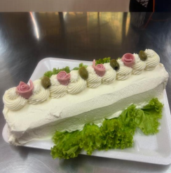

← Volver al módulo 1

Brazo Gitano Salado
Un delicioso brazo gitano relleno con crema salada, jamón, queso y vegetales frescos.
Ingredientes
- 8 huevos
- ½ taza de azúcar
- 1 taza de harina
- 1/3 taza de aceite
- 1 cucharada de esencia de vainilla
- 1 pizca de sal
Ingredientes del Relleno
- 200 g de queso crema
- 100 g de crema de leche
- 4 hojas de lechuga
- 1 paquete de jamón laminado
- 400 g de queso mozzarella laminado
- 1 pimentón
- 1 cebolla
- 400 g de crema de leche
Preparación
Preparar el mise en place.
Separar claras y yemas; batir las claras con la mitad del azúcar a punto nieve y las yemas con la otra mitad más la esencia hasta obtener punto letra.
Integrar los ingredientes secos en un bol y añadirlos poco a poco a la mezcla de claras y yemas.
Hornear a 180 °C durante 30 minutos.
Relleno
Batir la crema de leche con el queso crema y cubrir toda la masa.
Agregar jamón, queso, cebolla y pimentón por encima.
Enrollar con ayuda de un trapo semi húmedo.
Decoración
- Batir la crema de leche hasta que esté montada y cubrir el brazo gitano.
- Decorar con jamón, lechuga y aceitunas.